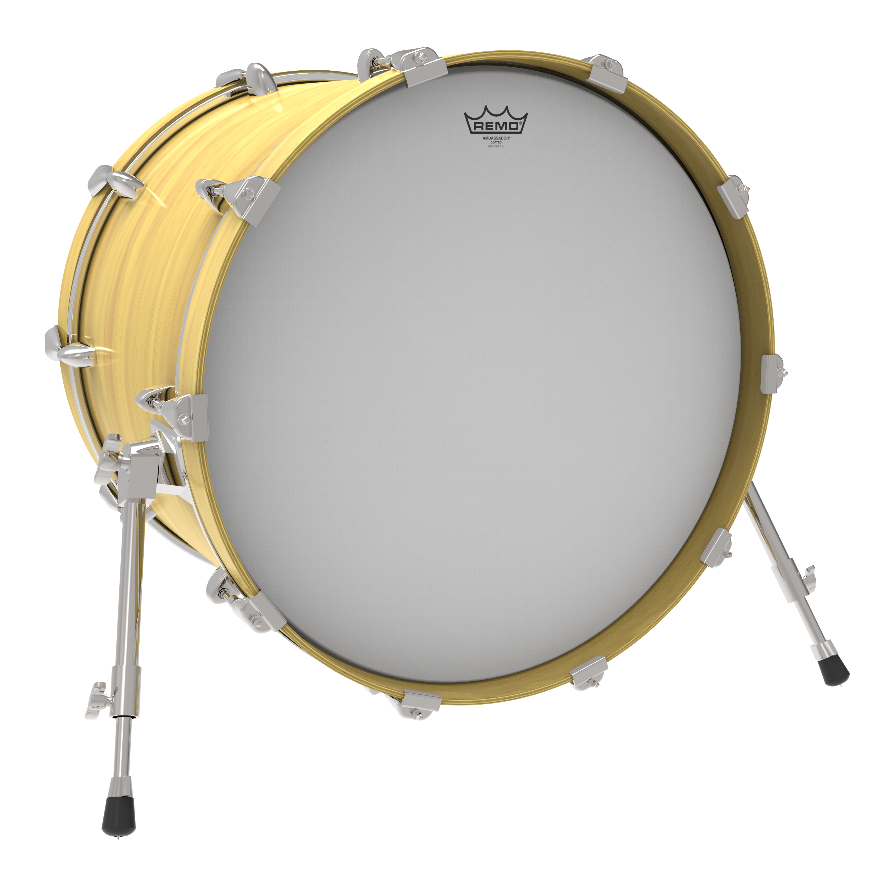
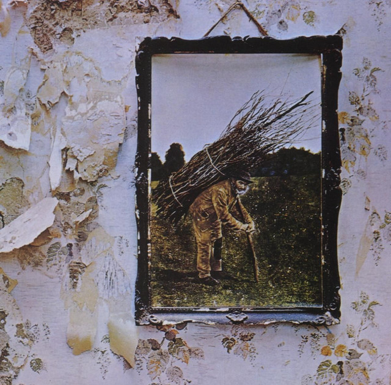
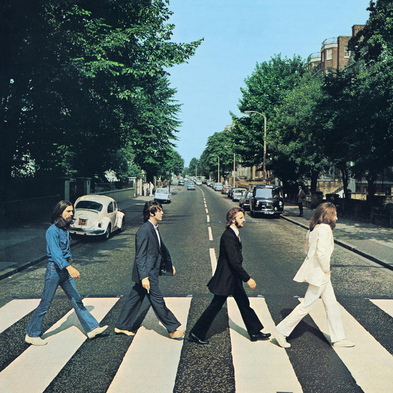
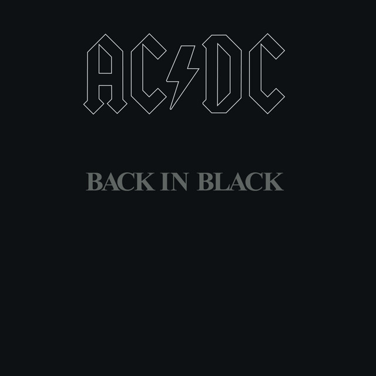
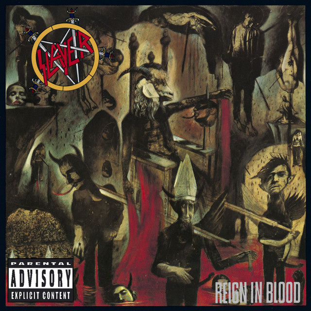

What is a bass drum?
The bass drum is a large, two-headed drum and the lowest-sounding drum in the orchestra. A player strikes it with a large padded mallet, and the big air-filled shell makes a deep, rumbling boom. It can add thunder, tension or a heartbeat-like pulse. [1]

Musical range and clef
The bass drum is an unpitched instrument, so it has no written range of notes. It makes a low sound of indefinite pitch, and players change the tone with the mallet, the strike position and the tension of the heads. [2]
Because it has no pitch, the bass drum is written on a percussion clef, which is usually one line or a short staff. The position on the line shows which instrument plays, and the rhythm shows when. [3]

Where is the bass drum seated in an orchestra?
The percussion section is at the very back of the orchestra, behind the brass, often along the back or right side of the stage. Exact placement changes with the piece and the hall. The bass drum is usually placed at the back, toward the center or right. [4]
Popular songs/pieces that feature the instrument:

When The Levee Breaks

Come Together

Back In Black

Raining Blood
References
- Wikipedia, "Bass Drum".
- Wikipedia, "Bass Drum".
- Wikipedia, "Bass Drum".
- Rockford Symphony Orchestra, "Are all orchestras arranged on stage the same way?".